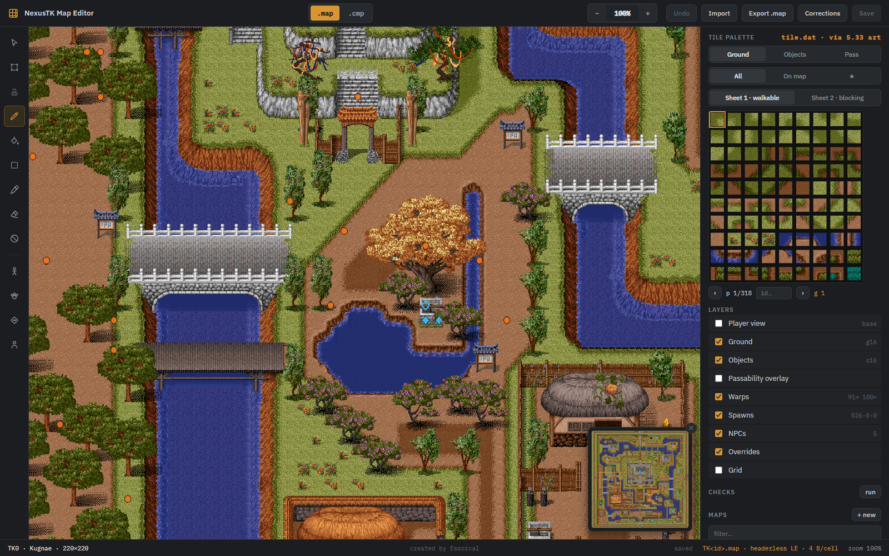
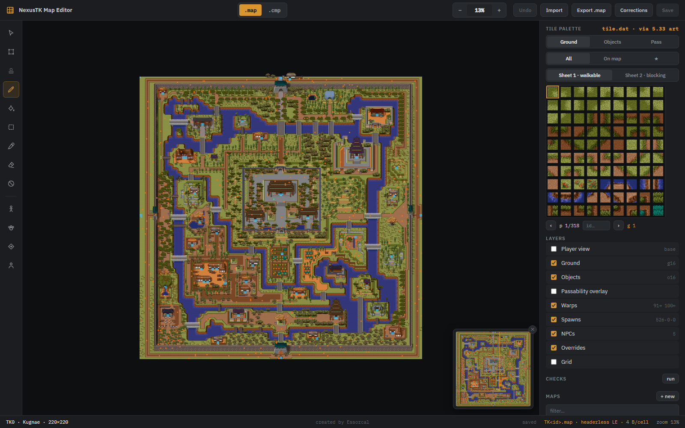
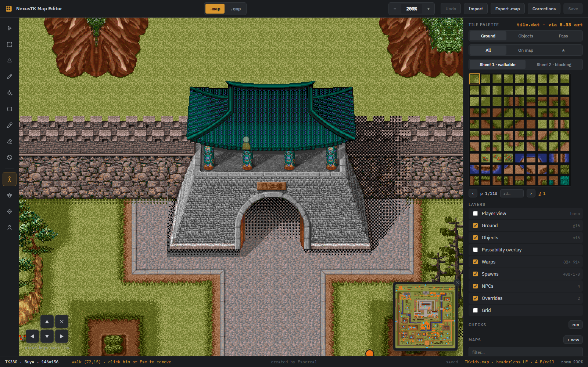
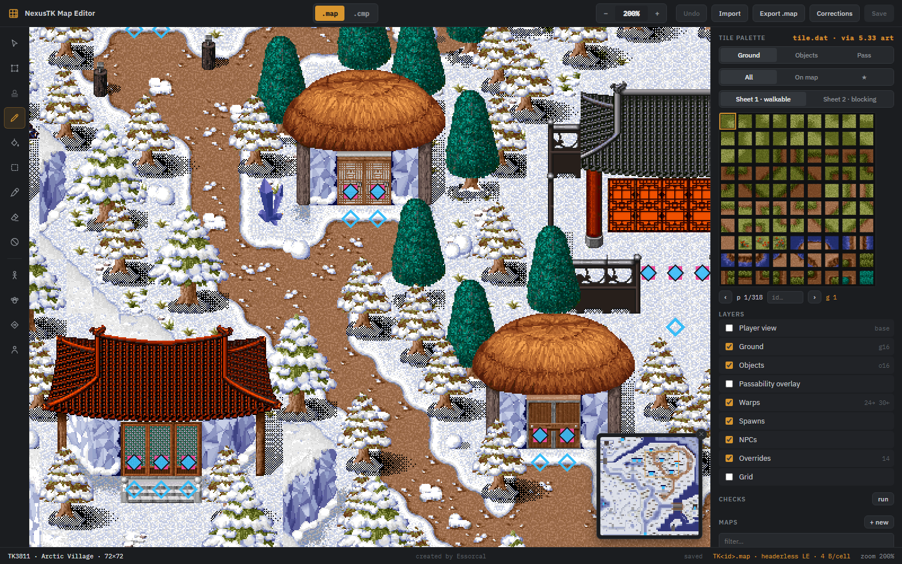
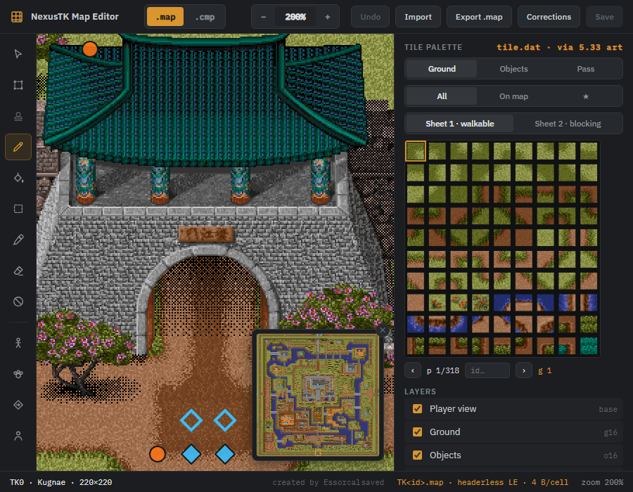

Project1998 · builder's tool
A visual editor for the world's maps. It renders with the real 5.33 client tile art —
verified pixel-identical to the running game — and edits the 4.x .map files the server
actually serves. It knows the content on the map (warps, spawns, NPCs, overrides as marker layers),
can render exactly what players see, places new spawns/warps/NPCs and whole new maps, and turns edits
into reviewable CSV rows — while never writing a game file itself: everything lands in its own
saved\ folder for you to publish deliberately.

wwwroot folder, and a few
runtime DLLs — keep the folder together).Project1998\dist\NexusTK-Map-Editor\). The editor finds the maps by looking for a
game-data\maps folder in the directories above it.NexusTK-Map-Editor.exe.The editor opens as a single application window (a WebView2 shell — no console, no browser tab). It decodes the tileset for about a second on the way up, and closing the window shuts everything down. Window size and position are remembered.
Prefer your own browser? Run with --browser: the editor opens as a tab instead, and the
server exits itself about 15 seconds after the last editor tab closes.
(--no-browser starts the bare server for tooling; add --heartbeat if you want
that to self-clean too.) Startup output goes to %TEMP%\nexustk-map-editor.log.
The editor needs the 5.33 client's Tile.dat. It looks, in order:
| Where | Notes |
|---|---|
P1998_CLIENT5 | environment variable pointing at the 5.33 client folder |
| next to the .exe | drop a copy of Tile.dat beside the program |
%LOCALAPPDATA%\Project1998\game\533\ | the standard Project1998 client install |
If either the maps or Tile.dat can't be found, a message box says exactly what's missing
and where it looked (the log has the same).
dotnet run --project MapEditor
To build the standalone exe yourself:
dotnet publish MapEditor/MapEditor.csproj -c Release -r win-x64 --self-contained -p:PublishSingleFile=true -p:AssemblyName=NexusTK-Map-Editor -o dist/NexusTK-Map-Editor
.map / .cmp format switch (hover for which client
each belongs to), zoom controls, Undo, Import, Export, Corrections (export
MapCells.csv rows), Discard draft, and Save.· draft state), the cell under your cursor
(ground word, pass flag, object id, plus any markers on it), tool hints, unsaved-change count, and
zoom.The palette has three modes:
id… box that jumps to a
tile number (decimal, or 0xC0CC-style hex for sheet-2 words).Shift+click a second swatch to select a rectangular block of tiles — the brush then stamps the whole block, and the rectangle tool tiles it as a repeating pattern. Hover a swatch to see it magnified — objects preview as their full sprite. The eyedropper works the other way: click any cell and the palette jumps to that tile, brush ready.
Zoom from 10% to 500%: the top-bar − / + buttons, typing a percentage, Ctrl + mouse wheel, or the + / - keys. Pan with space + drag, middle-mouse drag, the mouse wheel (Shift for horizontal), or the arrow keys. The minimap floats bottom-right with the current view marked — click or drag on it to jump; it carries the marker layers' dots, so a city's warps and spawns are visible at a glance.

| Tool | What it does |
|---|---|
| Select | inspect a cell — the bottom bar shows its ground word, pass flag, object |
| Marquee | drag a box; the region is copied on release |
| Stamp | click to paste the copied region, as many times as you like — all layers |
| Brush | paint the selected tile (click or drag); Ground/Objects/Pass tabs pick the layer |
| Fill | flood-fill the contiguous region under the cursor on the active layer |
| Rectangle | drag a box, fills it with the selected tile |
| Eyedropper | pick the tile under the cursor into the palette |
| Eraser | ground → void, object → none, pass → walkable |
| No-entry | toggle a cell's passability (this flips its ground sheet — see above) |
Ctrl+Z undoes stroke by stroke. The Passability overlay (Layers panel) tints every blocking cell red.
Nothing the editor generates goes into game-data. Everything lives with the tool under
dist\NexusTK-Map-Editor\saved\:
saved\maps\TK<id>.map — draft saves (Save / Ctrl+S), including new mapssaved\csvs\ — exported rows: Corrections (mapcells-TK<id>.csv),
spawns (spawns-TK<id>.csv), warps (warps-pending.csv), NPCs
(npcs-pending.csv)saved\new-maps.csv — index rows for maps created in the editorSave never overwrites the shipped map. Loading a map prefers its draft, so your work is there
next session; the status bar shows · draft, and Discard draft deletes the draft and
reloads the shipped map. Getting an edit into the actual game is deliberate and manual — either copy
saved\maps\TK<id>.map over game-data\maps\TK<id>.map yourself
(then @reload on the server), or for small fixes use Corrections and append the rows
to game-data\MapCells.csv.
map_index.csv row is
appended too), and the Corrections/spawn/warp/NPC exports append their rows straight into the live CSVs.
The server still needs @reload, and git is the only undo — that trade is the point of the
confirmation.The walk tool drops a test character. Move with the arrow keys or the on-screen pad; blocked cells refuse the step, and walking behind trees, roofs and walls shows the same translucent ghost the real client draws. It always walks the base pass flags — the ones the server actually enforces — so it strolls through the default-open city gates even when the raw file draws them blocked. Remove it by clicking it, pressing Esc, or the ✕ on the pad.

Read-only overlay layers (Layers panel) show the cells that server content points at, read fresh from
the live game-data CSVs on every map load:
Warps.csv: filled = a warp out lives here,
hollow = some other map's warp lands here. Violet diamonds are the world-map screen's cells.Spawns.csv), dashed orange boxes for
area-spawn regions, labeled with the mob and count.NPCs.csv).Doors.csv runs, ForceOpen tiles, and MapCells.csv
overrides. That's what players actually see; the editor otherwise draws the raw file.MapCells.csv authored overrides. Check
here before "fixing" a cell that may already be fixed.

Warps are usable, not just visible: with the select tool, clicking a warp diamond follows it — and the test character warps for real, including your pending placed warps, so you can walk into a brand-new map through its unpublished door before a single row is appended.
The run button in the Checks section scans the loaded map for suspicious cells: warp arrivals and spawn points on blocked ground, and walkable edges into void. Click a finding to jump to it. It judges the base (a cell an override already unblocks is not a finding), and blocked warp sources are deliberately not flagged — a doorway warp on a blocked cell is the game's normal idiom.
The server applies game-data/MapCells.csv rows as authored overrides on top of the
shipped maps — "the shipped map is wrong here". The Corrections button diffs the editor's buffer
against the shipped map and writes one CSV row per changed cell to
saved\csvs\mapcells-TK<id>.csv, unchanged columns left blank so they inherit. A
three-cell fix becomes three reviewable lines in git instead of a rewritten binary map.
Spawns.csv rows numbered past the file's max.Warps.csv already covers
the way back. Place the return leg yourself; almost no real pair is an exact mirror.Placements are per-map, survive restarts, and export to saved\csvs\ — append the rows to
the live CSVs by hand, then @reload.
+ new (Maps panel) creates a brand-new map: an unused id (validated against both
map_index.csv and the full RTK Maps.csv; the suggested id from 59000 up is
free in both), a name, and dimensions (5–255 per axis). You get an all-void canvas — fence the playable
area with blocking tiles the way the shipped maps do. Publishing is the usual manual step:
saved\new-maps.csv to game-data\map_index.csvsaved\maps\TK<id>.map into game-data\maps\@reload — the server's map registry is map_index.csv, so that's
all it takesThen wire it into the world with the warp tool — a pair in, a pair back out.
.map — the 4.x client format: headerless, 4 bytes per cell. The format the
server serves and the editor edits natively..cmp — the 5.33 client format: CMAP header + zlib, 6 bytes per
cell.Import accepts either. A .cmp carries its own dimensions; a headerless
.map will ask for them (the editor suggests the likely pair from the file size).
The address bar carries state you can link to:
http://127.0.0.1:5959/?map=330&at=72,15&zoom=200
map (id), at (x,y to center on), zoom (percent),
walk (x,y to drop the test character), and view=player (start in Player view)
all work.
%TEMP%\nexustk-map-editor.log. If it mentions
WebView2, the editor already fell back to your browser; the (rarely missing) WebView2 runtime ships
with Windows 11 and with Edge on Windows 10.--port 5970; --no-browser skips the auto-opened tab.P1998_REPO.Tile.dat next to
the exe, or set P1998_CLIENT5.